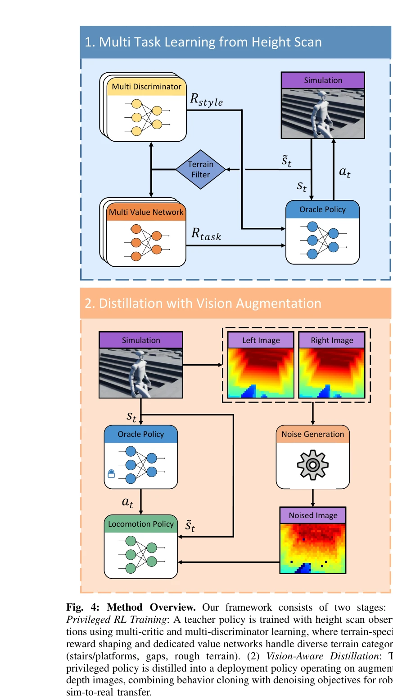

Now You See That: Learning End-to-End Humanoid Locomotion from Raw Pixels
저자: Wandong Sun, Yongbo Su, Leoric Huang, Alex Zhang, Dwyane Wei, Mu San, Daniel Tian, Ellie Cao, Finn Yan, Ethan Xie, Zongwu Xie | 날짜: 2026-02-06 | URL: https://arxiv.org/abs/2602.06382
Essence
Fig. 1: Overview. Our end-to-end vision-based humanoid locomotion policy enables robust traversal across diverse challen
Raw 깊이 이미지로부터 end-to-end 휴머노이드 로봇 보행을 학습하기 위해, 현실적인 depth 센서 시뮬레이션과 vision-aware behavior distillation, 그리고 terrain-specific multi-critic/multi-discriminator 학습을 결합한 프레임워크를 제시한다.
Motivation
Known: LiDAR 기반 elevation map 방식이 quadruped 로봇에 성공했으나, 휴머노이드 로봇의 동적 불안정성으로 인한 odometry drift 문제와 perception noise로 인한 fine-grained 제어 어려움이 존재한다.
Gap: Vision 기반 휴머노이드 보행 시 sim-to-real gap에서 비롯된 perception noise가 센티미터 단위 정확도 요구 작업에서 성능을 심각하게 저하시키고, 다양한 terrain에서 단일 통합 정책 학습이 상충하는 학습 목표로 인해 어렵다.
Why: 휴머노이드 로봇의 비전 기반 보행은 embodied intelligence의 중요한 벤치마크이며, 극한 장애물(높은 플랫폼, 넓은 간격)부터 fine-grained 작업(계단 오르내리기)까지 다양한 환경에서 robust하게 작동하는 정책이 필요하다.
Approach: 두 단계 학습 파이프라인을 제시한다: (1) height scan으로 multi-critic/multi-discriminator RL을 사용해 privileged policy 학습, (2) 현실적인 depth 센서 시뮬레이션과 vision-aware behavior distillation을 통해 depth 이미지 기반 deployment policy로 distill.
Achievement
Fig. 1: Overview. Our end-to-end vision-based humanoid locomotion policy enables robust traversal across diverse challen
Vision-aware Behavior Distillation: Latent space alignment과 noise-invariant auxiliary tasks를 결합하여 privileged height map에서 noisy depth 관찰로의 효과적인 지식 전이 달성
Multi-Critic/Multi-Discriminator 학습: 각 terrain 타입의 고유한 dynamics와 motion priors를 포착하는 dedicated networks로 통합 정책 내에서 terrain-specific 적응 구현
Cross-Platform 검증: 서로 다른 stereo depth 카메라가 장착된 두 휴머노이드 로봇에서 실제 배포 검증, 극한 terrain과 fine-grained 작업 모두 성공적으로 수행
How

Fig. 4: Method Overview. Our framework consists of two stages: (1)
Stereo depth fusion을 시뮬레이션하여 occlusion과 textureless 영역의 hole pattern 재현
총평: 본 논문은 휴머노이드 로봇의 vision-based 보행에서 sim-to-real gap과 다양한 terrain 통합 학습의 근본적인 두 과제를 체계적으로 해결하며, 현실적인 센서 모델링과 behavior distillation, terrain-specific 학습을 결합한 창의적인 프레임워크를 제시한다. 두 개의 실제 로봇 플랫폼에서 극한 장애물부터 fine-grained 작업까지 광범위한 성능 검증을 통해 학술적·실무적 가치가 높다.